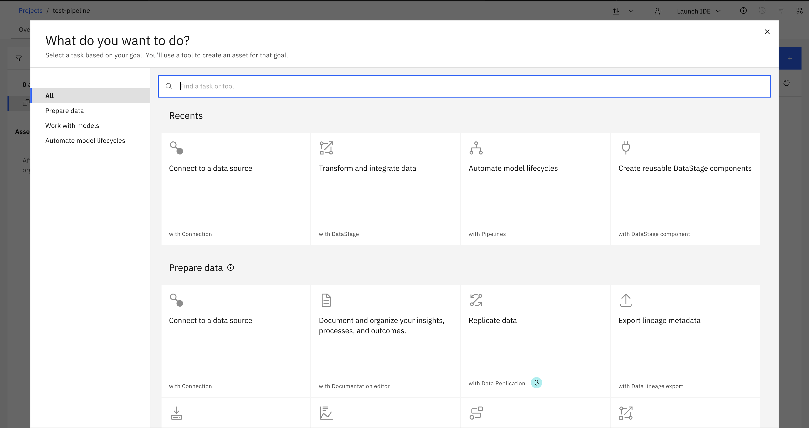
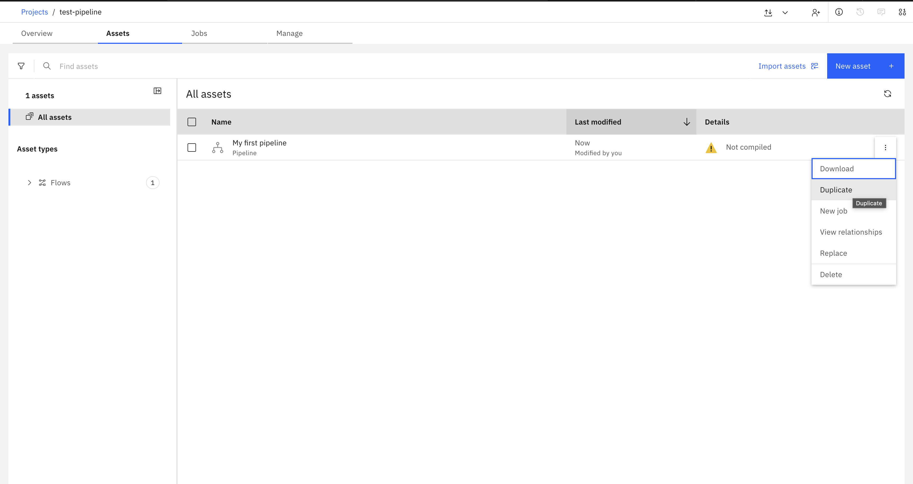
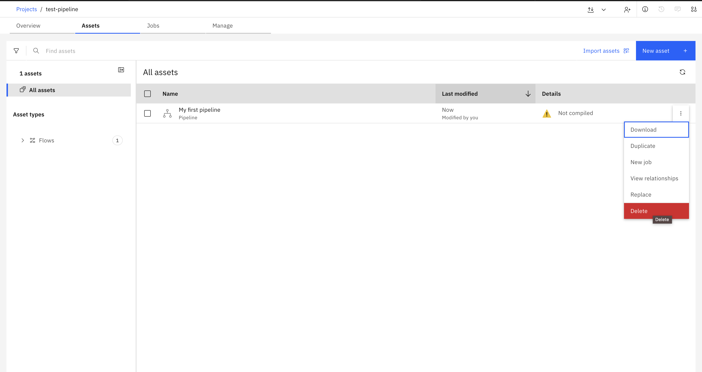

Pipelines#
A pipeline is an orchestration object used to coordinate and execute complex data workflows. Pipelines are built using Kubeflow Pipelines (KFP) and allow you to define workflows as Python functions decorated with @dsl.pipeline. Unlike batch or streaming flows, pipelines focus on orchestrating multiple tasks, jobs, and components in a coordinated manner.
- The SDK provides the following functionality to interact with pipelines:
Creating a pipeline
Retrieving pipelines
Duplicating a pipeline
Deleting a pipeline
Working with pipeline components
Creating a Pipeline#
In the UI, you can create a pipeline by navigating to Assets -> New asset -> Automate model lifecycles with Pipelines.
{kind=link}

In the SDK, you can create a pipeline from a Project object using the
Project.create_pipeline() method.
You are required to supply a name parameter, a pipeline_function (a KFP pipeline decorated with @dsl.pipeline), and optional description and parameter_sets parameters.
This method returns a Pipeline instance.
>>> from kfp import dsl
>>>
>>> @dsl.component
... def add_two_numbers(a: int, b: int) -> int:
... print(f"Adding numbers: {a} + {b}")
... return a + b
>>>
>>> @dsl.pipeline
... def my_pipeline() -> None:
... add_two_numbers(a=1, b=2)
>>>
>>> pipeline = project.create_pipeline(
... name='My first pipeline',
... pipeline_function=my_pipeline,
... description='A simple addition pipeline'
... )
>>> pipeline
Pipeline(pipeline_id='...', name='My first pipeline')
Note
Pipelines use Kubeflow Pipelines (KFP) syntax. You must define your pipeline using the @dsl.pipeline decorator and components using the @dsl.component decorator.
Retrieving Pipelines#
Pipelines can be retrieved through a Project object using the
Project.pipelines property.
You can retrieve a single pipeline using the Pipelines.get() method which takes in unique identifiers such as the pipeline_id or name.
>>> # Get all pipelines
>>> project.pipelines
[Pipeline(pipeline_id='...', name='My first pipeline', description='A test pipeline for documentation')]
>>> # Get a specific pipeline by name
>>> my_pipeline = project.pipelines.get(name='My first pipeline')
>>> my_pipeline
Pipeline(pipeline_id='...', name='My first pipeline', ...)
>>> # Get a specific pipeline by ID
>>> project.pipelines.get(pipeline_id=my_pipeline.pipeline_id)
Pipeline(pipeline_id='...', name='My first pipeline', ...)
Duplicating a Pipeline#
In the UI, you can duplicate a pipeline by navigating to Assets, finding your pipeline, clicking the three dots, and selecting Duplicate.
{kind=link}

To duplicate a pipeline using the SDK, pass a Pipeline instance
to the Project.duplicate_pipeline() method,
along with the name parameter for the new pipeline and an optional description parameter.
This duplicates the pipeline and returns a new instance of Pipeline.
>>> duplicated_pipeline = project.duplicate_pipeline(
... pipeline,
... name='My duplicated pipeline',
... description='A copy of my first pipeline'
... )
>>> duplicated_pipeline
Pipeline(pipeline_id='...', name='My duplicated pipeline', ...)
Deleting a Pipeline#
In the UI, you can delete a pipeline by navigating to Assets, finding your pipeline, clicking the three dots, and selecting Delete.
{kind=link}

To delete a pipeline using the SDK, pass a Pipeline instance to the Project.delete_pipeline() method.
This method returns an HTTP response indicating the status of the delete operation.
>>> response = project.delete_pipeline(duplicated_pipeline)
>>> response.status_code
204
Running a Pipeline#
To run a pipeline, you first need to create a job from the pipeline, then start the job.
This is done using the Project.create_job() method
followed by the Job.start() method.
>>> # Create a job for the pipeline
>>> pipeline_job = project.create_job(name='My pipeline job', flow=pipeline)
>>> pipeline_job
Job(name='My pipeline job', ...)
>>> # Start the job
>>> job_run = pipeline_job.start(name='My pipeline job run', description='First run')
>>> job_run
JobRun(...)
>>> # Check the status
>>> job_run.state
'Running'
Using Parameter Sets with Pipelines#
Pipelines can use parameter sets to make them more flexible and reusable. Parameter sets allow you to define parameters that can be referenced within your pipeline.
>>> from ibm_watsonx_data_integration.cpd_models.parameter_set_model import ParameterSet, ParameterType
>>>
>>> # Create a parameter set
>>> param_set = project.create_parameter_set(
... name='pipeline_params',
... parameters=[
... {'name': 'input_value', 'type': ParameterType.String, 'value': 'test'},
... {'name': 'threshold', 'type': ParameterType.Integer, 'value': 100}
... ]
... )
>>>
>>> # Create a pipeline with parameter sets
>>> @dsl.pipeline
... def my_pipeline_with_params() -> None:
... add_two_numbers(a=10, b=20)
>>>
>>> pipeline = project.create_pipeline(
... name='Pipeline with params',
... pipeline_function=my_pipeline_with_params,
... parameter_sets=[param_set]
... )